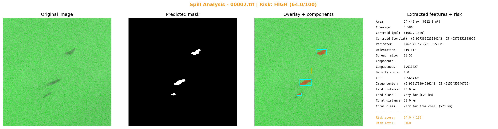

مركز الصورة: lon=5.992173394536248, lat=55.45155455340766
مركز التسرب: lon=5.997383623184142, lat=55.45371051008955
التاريخ: 2023-01-13 20:54:31
التحليل البصري

التقرير
**تقرير تحليل تسرب نفطي باستخدام صور الأقمار الاصطناعية SAR**
١. الملخص التنفيذي
تم تحليل صورة الأقمر الصناعي SAR لتحديد موقع تسرب نفطي في منطقة محددة. النتائج تشير إلى وجود تسرب نفطي معتدل الشدة، ومتوسط المسافة من اليابسة هي 20 كم.
٢. الموقع الجغرافي والتاريخ
* نظام الإحداثيات: EPSG:4326
* مركز الصورة: (5.992173394536248, 55.45155455340766)
* مركز التسرب: (5.997383623184142, 55.45371051008955)
* التاريخ: 2023-01-13 20:54:31
٣. الوصف الهندسي للتسرب
* المساحة: 24,448 بكسل (6112.0 م²)
* نسبة التغطية: 0.58%
* المحيط: 1462.71 بكسل (731.3553 م)
* مركز البقعة (بكسل): (1082, 1000)
٤. القرب من اليابسة والشعب المرجانية والأثر البيئي
* المسافة من اليابسة: 20.0 كم
* التصنيف: Very far (>20 km)
* المسافة من الشعب المرجانية: 20.0 كم
* التصنيف: Very far from coral (>20 km)
٥. تقييم الخطورة
* Risk Score: 64.0 / 100
* Risk Level: HIGH
* العوامل:
+ coverage 0.58% → MINIMAL (<2%) | spread_ratio 10.56 → CRITICAL (>=10) | components 3 → HIGH | density 1.0 → CRITICAL | land 20.0 km → LOW | coral 20.0 km → LOW
٦. التوصيات
* توصية 1: إجراء دراسة تفصيلية لتحديد حجم التسرب ومداه.
* توصية 2: توجيه جهود الإزالة إلى المنطقة المتضررة من التسرب.
* توصية 3: مراقبة وتحليل التغيرات في البيئة الناجمة عن التسرب.
٧. الملاحظات
* يُعتبر هذا التقرير جزءًا من عملية تحليل تسرب نفطي، ويتطلب مزيدًا من التحقيق والتحليل لتحديد أسباب والتأثيرات على البيئة.
* يجب إجراء دراسة تفصيلية لتحديد حجم التسرب ومداه.